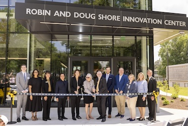

Cleanroom
Specialized laboratory space supporting semiconductor, materials science, and precision research activities.
The Robin and Doug Shore Innovation Center provides cutting-edge spaces for interdisciplinary research, advanced technology, collaboration, and student innovation on the Kennesaw State University Marietta Campus.

Specialized laboratory space supporting semiconductor, materials science, and precision research activities.
High-performance computing resources and secure environments for cybersecurity education and research.
A collaborative area designed for large-scale engineering, prototyping, and hands-on innovation.